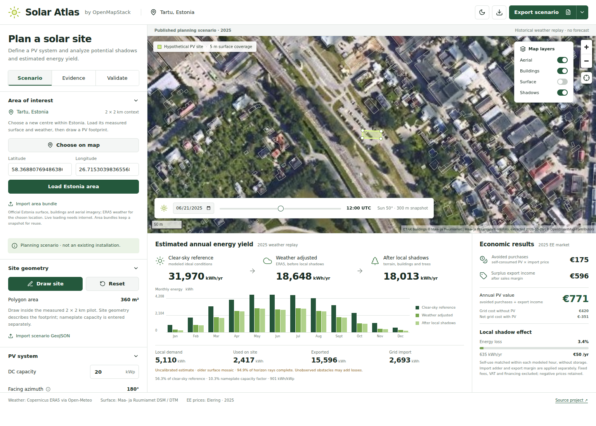
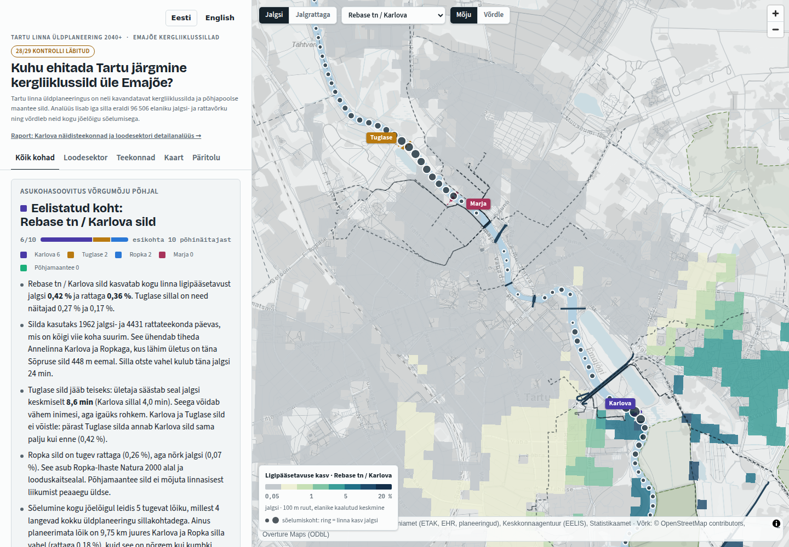
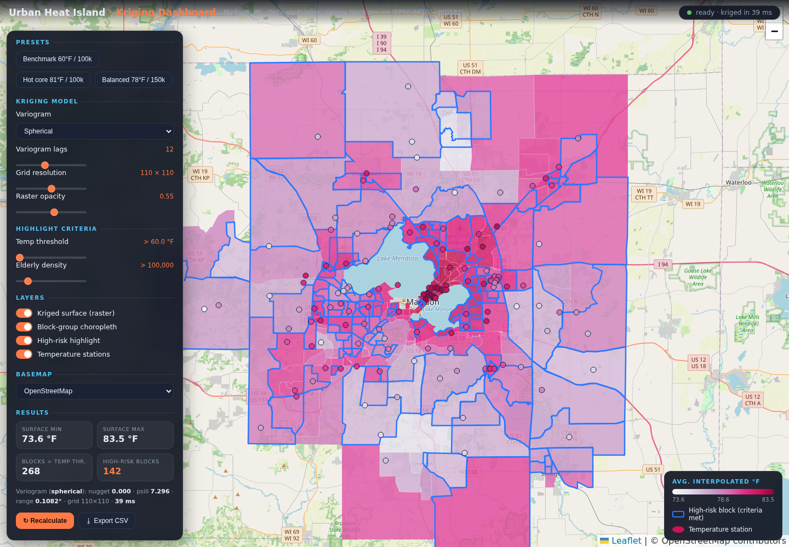

Solar Atlas
Plan PV sites across Estonia. Compare energy, household consumption and battery storage, then export a scenario report.
OpenMeasured places. Reproducible projects.
Interactive views over real open geodata.

Plan PV sites across Estonia. Compare energy, household consumption and battery storage, then export a scenario report.
Open


Compare proposed Emajõgi bridges and their effects on walking and cycling access in Tartu.
Open
Explore temperature interpolation, kriging settings and heat-risk screening in Madison, Wisconsin.
Open